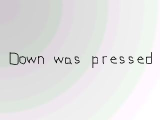
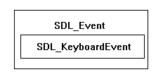
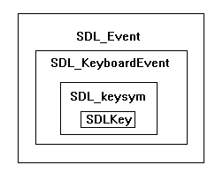

Key Presses

Last Updated 2/23/14
This lesson covers how to detect key presses. It's a simple program that shows which arrow key was pressed. You've already done some simple event handling with SDL_QUIT, now this tutorial will teach you to detect when a key is pressed, and how to check which key it was.A Key presses tutorial with SDL 2 is now available.
//Generate the message surfaces
upMessage = TTF_RenderText_Solid( font, "Up was pressed.", textColor );
downMessage = TTF_RenderText_Solid( font, "Down was pressed.", textColor );
leftMessage = TTF_RenderText_Solid( font, "Left was pressed", textColor );
rightMessage = TTF_RenderText_Solid( font, "Right was pressed", textColor );
After everything is initialized and loaded, we generate all 4 message surfaces.
I probably should have checked for errors when rendering the text but ....eh, less typing for me.
I probably should have checked for errors when rendering the text but ....eh, less typing for me.
//If there's an event to handle
if( SDL_PollEvent( &event ) )
{
//If a key was pressed
if( event.type == SDL_KEYDOWN )
{
Now when we want to check when a key is pressed, we check for event type SDL_KEYDOWN.
//Set the proper message surface
switch( event.key.keysym.sym )
{
case SDLK_UP: message = upMessage; break;
case SDLK_DOWN: message = downMessage; break;
case SDLK_LEFT: message = leftMessage; break;
case SDLK_RIGHT: message = rightMessage; break;
}
}
//If the user has Xed out the window
else if( event.type == SDL_QUIT )
{
//Quit the program
quit = true;
}
}
Now if a key was pressed, we need to check which key it was.
SDL_PollEvent() puts the SDL_KEYDOWN data in the event structure as a SDL_KeyboardEvent named "key":
If the up arrow was pressed, the sym will be SDLK_UP and we'll set the message to be up, if the down arrow was pressed, the sym will be SDLK_DOWN and we'll set the message to be down, etc, etc.
To see what all the SDL_Key definitions are, you can look it up in the SDL documentation.
We also check if the user wants to X out the window, and handle it accordingly.
Note: Some IDEs like Code::Blocks have the -Wall flag on by default. This will cause the compiler to complain if you don't have a case statement for all the key values. You can get the compiler to stop complaining by adding:
SDL_PollEvent() puts the SDL_KEYDOWN data in the event structure as a SDL_KeyboardEvent named "key":

and inside of "key" is a keysym structure:
and inside of the keysym is the SDL_Key named "sym", which is which key was pressed.If the up arrow was pressed, the sym will be SDLK_UP and we'll set the message to be up, if the down arrow was pressed, the sym will be SDLK_DOWN and we'll set the message to be down, etc, etc.
To see what all the SDL_Key definitions are, you can look it up in the SDL documentation.
We also check if the user wants to X out the window, and handle it accordingly.
Note: Some IDEs like Code::Blocks have the -Wall flag on by default. This will cause the compiler to complain if you don't have a case statement for all the key values. You can get the compiler to stop complaining by adding:
default : ;
to your switch block. //If a message needs to be displayed
if( message != NULL )
{
//Apply the images to the screen
apply_surface( 0, 0, background, screen );
apply_surface( ( SCREEN_WIDTH - message->w ) / 2, ( SCREEN_HEIGHT - message->h ) / 2, message, screen );
//Null the surface pointer
message = NULL;
}
//Update the screen
if( SDL_Flip( screen ) == -1 )
{
return 1;
}
When the message surface isn't pointing to anything it'll be NULL and nothing will be blitted.
When the message surface is pointing to something we'll apply the background, then apply the message surface centered on the screen.
The way you center a surface is to first subtract the width/height from the width/height of the surface you're blitting to. Since when surface is centered the padding on both sides is equal, you divide the remaining distance into two equal halves.
After that we reset the message to NULL, then we update the screen.
The way you center a surface is to first subtract the width/height from the width/height of the surface you're blitting to. Since when surface is centered the padding on both sides is equal, you divide the remaining distance into two equal halves.
After that we reset the message to NULL, then we update the screen.